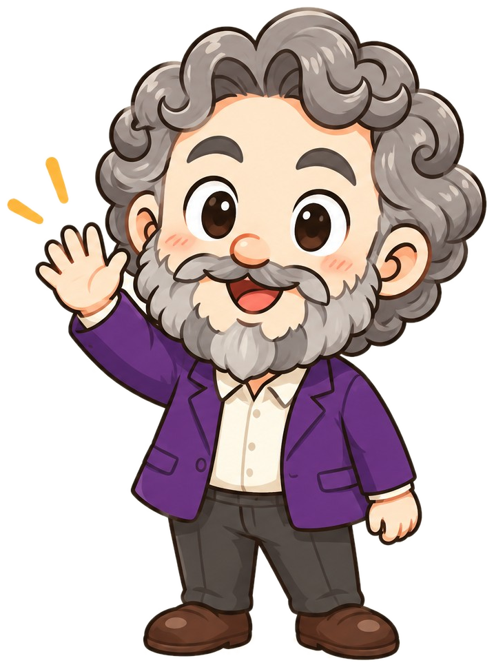

claude30분짜리 실습을 시작하겠습니다manual수동 · 하나하나 허락accept edits on수정은 바로 반영plan mode계획만 보여 줌papers/ 가상 논문 0편 생성다음plan modeliterature_table.csv — 6편을 한 표로/lecture-kit .claude/skills/lecture-kit/SKILL.md/lecture-kit 학생들이 AI를 활용하는 경우가 많습니다다음 주 주제: AI를 활용한 평가CLAUDE.md = Claude의 헌법/daily-ai-news 지금 실행해 줘